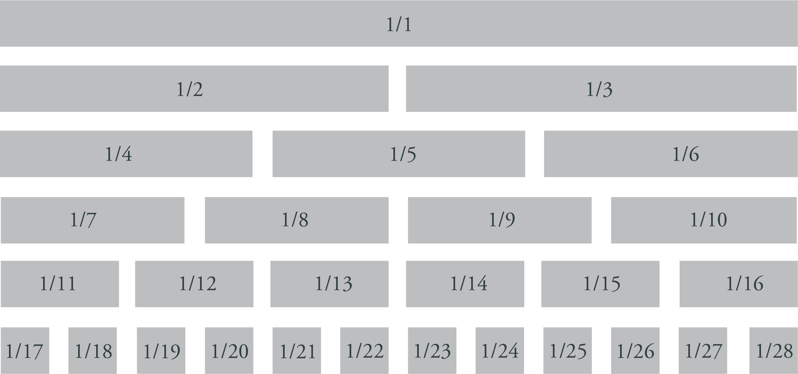

The goal of this websiteis to ease the documentation and the usage of brand guidelines for Wayfair Company in the digital age. Designers, front-end developers and brand managers can use this style guide to become more efficient and improve Wayfair brand consistancy over all channels.
For this assignment, I have developed an interactive and responsive HTML & CSS UI Style Guide prototype for the Wayfair company. I have created UI elements, templates, pointed out the rules for the layout, color palette rules, typography, and logo usage in my style guide.
Choosing a 12-column grid for my website offers a balanced framework for organizing content, ensuring visual harmony and alignment across different sections. Its flexibility and compatibility with popular frameworks make it a practical choice for creating responsive layouts and maintaining consistency throughout my site.
I chose DM Serif Display for its elegant and classic appeal, evoking a sense of craftsmanship and sophistication that resonates well with furniture design. Chivo complements it with its modern and versatile style, offering readability and a contemporary aesthetic that enhances the overall user experience on my website.
H1 | Typeface: DM Serif Display | Weight: 300 | Size: 72px/4.5EM
H2 | Typeface: DM Serif Display | Weight: 300 | Size: 48px/3EM
H3 | Typeface: Chivo | Weight: 300 | Size: 30px/1.8EM
H4 | Typeface: Chivo | Weight: 300 | Size: 24px/1.5EM
P | Typeface: Chivo | Weight: 300 | Size: 18px/1.1EM
I selected dark spruce for its rich, earthy tones, evoking a connection to nature and imbuing your website with a sense of warmth and comfort, reminiscent of cozy interiors. The gray shade complements it by offering a modern and versatile backdrop, allowing my furniture pieces to shine while maintaining a harmonious and balanced aesthetic throughout my website.
#4A5959
#304040
#BFBFBF
#D9D9D9
#F2F2F2
My button style boasts dimensions of 200 pixels width and 60 pixels height, providing a substantial yet visually appealing interactive element on my website. Upon hover, it transitions to a light grey background with dark spruce text color, offering a subtle yet intuitive feedback mechanism that enhances user interaction and navigation experience.
Hover